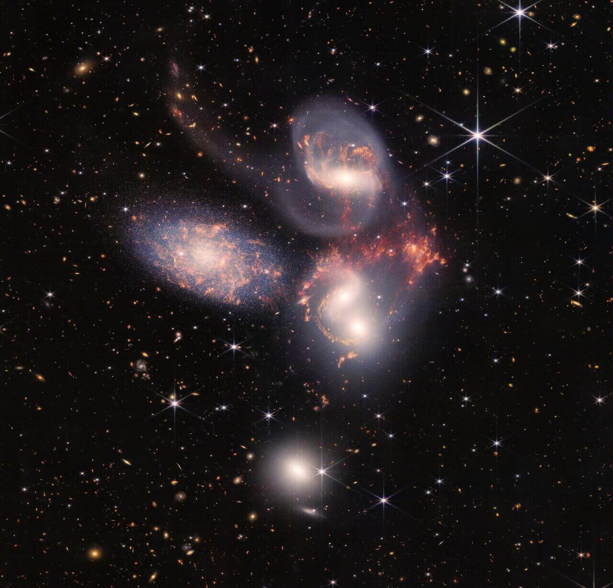
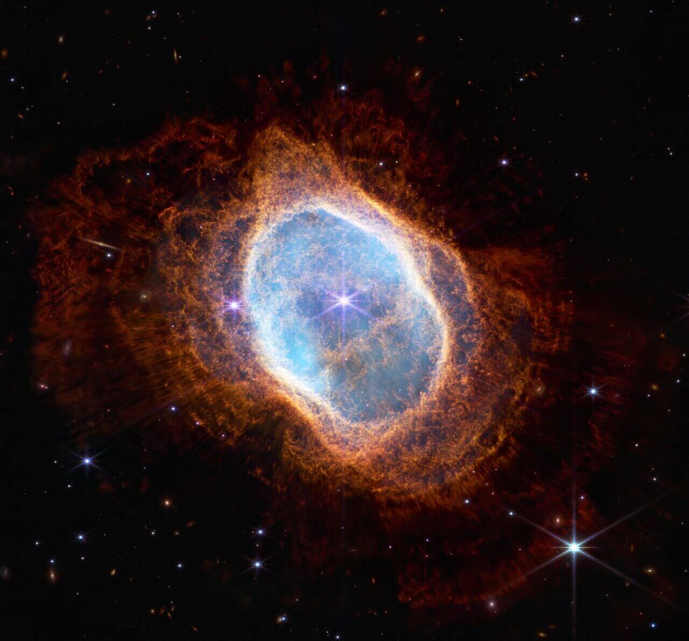
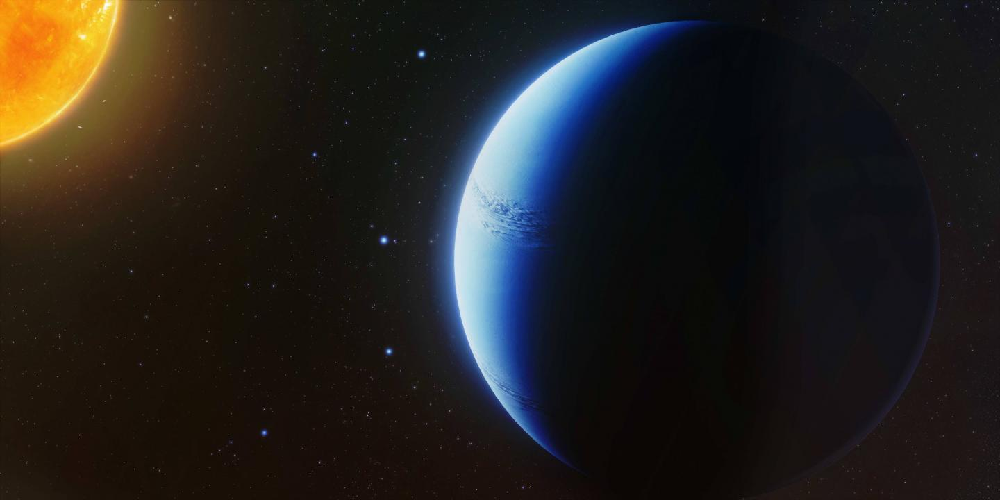
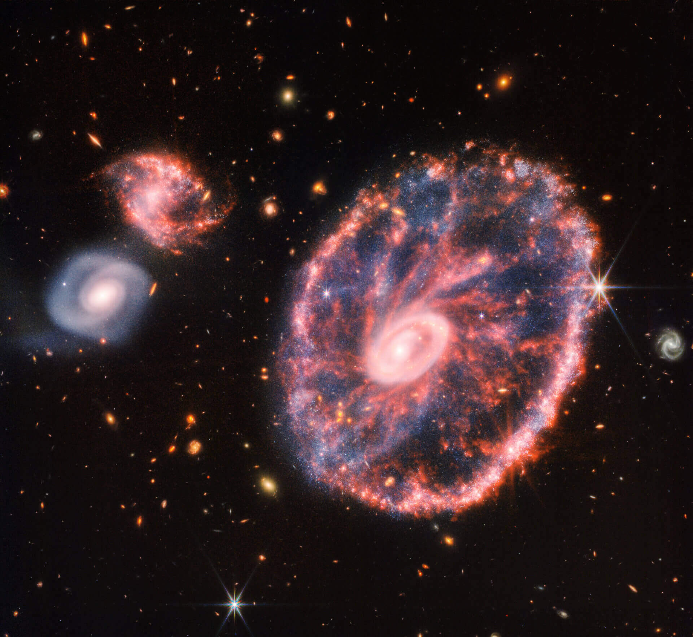
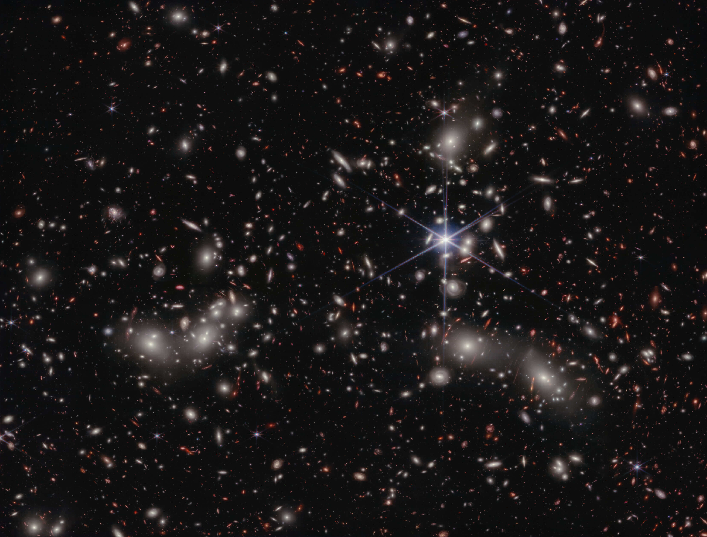
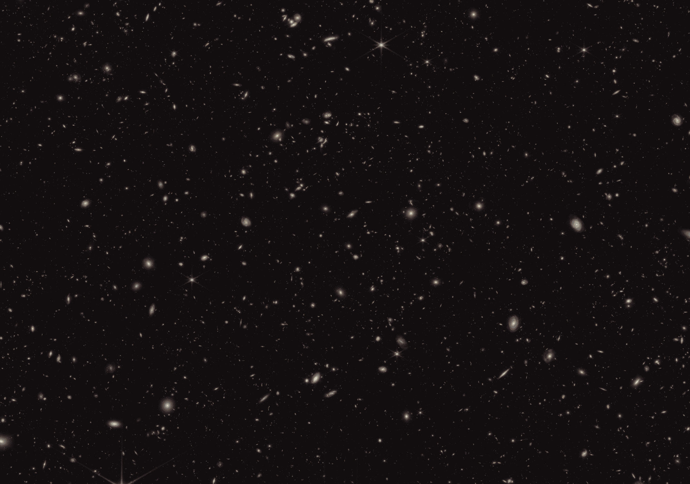

The Universe’s Deepest Portrait Reveals Thousands of Ancient Galaxies
JWST’s SMACS 0723 deep field captured a galaxy cluster acting as a cosmic lens, revealing some of the most distant and faint galaxies ever observed.
Read More →Groundbreaking findings that are reshaping our understanding of the cosmos.
JWST’s SMACS 0723 deep field captured a galaxy cluster acting as a cosmic lens, revealing some of the most distant and faint galaxies ever observed.
Read More →
Webb’s infrared vision has brought colliding galaxies into sharp detail, revealing glowing star formation, dust lanes, and warped structures.
Read More →
The Carina Nebula image uncovers vast pillars of gas and dust being sculpted by radiation from massive young stars near the Milky Way.
Read More →
The Southern Ring Nebula displays expanding layers of gas ejected by a dying star, helping scientists understand how stellar death spreads heavy elements.
Read More →
JWST studies exoplanet atmospheres by measuring starlight passing through them, revealing clues about water vapor, clouds, and chemistry.
Read More →
The Cartwheel Galaxy appears as a ring-shaped structure created by a high-speed collision, triggering waves of new star formation.
Read More →
JWST reveals an active young planetary system surrounded by gas and dust, helping astronomers investigate how stars and planets form.
Read More →
Pandora’s Cluster, also known as Abell 2744, shows multiple galaxy clusters merged together, bending light and revealing magnified background galaxies.
Read More →
JWST’s ability to detect faint infrared observations helps find the first hundreds of millions of years after the Big Bang, revealing unexpectedly bright early galaxies.
Read More →Stay updated with the latest discoveries and observations from the James Webb Space Telescope. New findings are regularly published as astronomers analyse the mountain of data being collected.